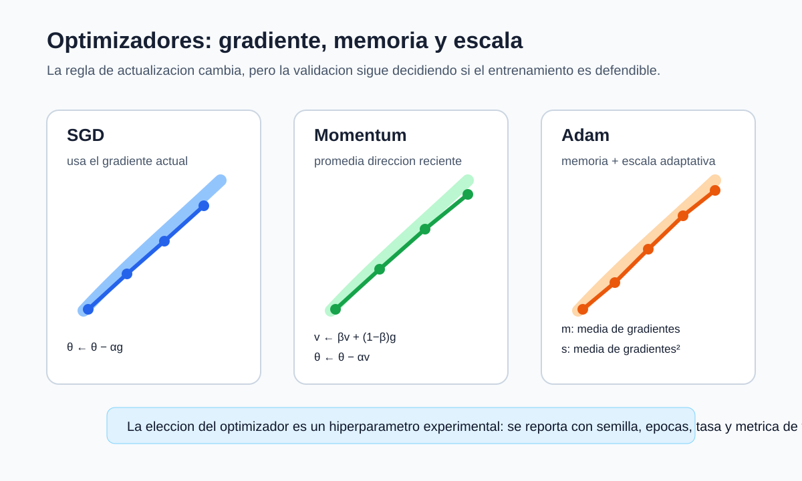

Optimizadores y PyTorch
Pregunta aplicada
Hasta ahora actualizamos parámetros con descenso del gradiente simple:
\[ \theta \leftarrow \theta - \alpha \nabla J(\theta). \]
Pero redes neuronales reales suelen entrenarse con variantes que usan memoria del gradiente, escalamiento adaptativo o mini-batches.

Lectura de la figura. Sin regularización incorporada al optimizador, SGD, momentum y Adam conservan el objetivo y cambian la regla que convierte gradientes en actualizaciones. Por eso el optimizador debe reportarse como parte del experimento, junto con tasa de aprendizaje, batch size, épocas y métrica de validación.
Objetivos del capítulo
Al terminar este capítulo deberías poder:
- distinguir batch, mini-batch y época;
- explicar la intuición de momentum, RMSProp y Adam;
- ubicar forward, loss, backward y actualización en un loop de PyTorch;
- comparar una implementación desde cero con PyTorch sin cambiar la pregunta experimental;
- reconocer que un optimizador no reemplaza validación.
- escribir las ecuaciones completas de Adam y explicar la corrección de sesgo;
- comparar costo, memoria y alcance de las garantías de SGD, momentum y Adam.
Gradiente estocástico y filtración
Condicionado en el dataset, el historial de entrenamiento puede verse como un proceso aleatorio generado por mini-batches e inicialización. Si \(\mathcal F_t\) contiene toda la información disponible antes de escoger el lote \(B_t\), un gradiente de mini-batch uniforme satisface
\[ \mathbb E[g_t\mid\mathcal F_t] =\nabla\widehat R_m(\theta_t). \]
La diferencia
\[ \xi_t=g_t-\nabla\widehat R_m(\theta_t) \]
es ruido de gradiente con media condicional cero bajo ese esquema de muestreo. Momentum y Adam transforman la secuencia de gradientes; no convierten automáticamente \(g_t\) en un mejor estimador del riesgo poblacional.
Comparar optimizadores exige conservar distribución de mini-batches, presupuesto de actualizaciones, inicialización y partición. Cambiar esas fuentes simultáneamente confunde efectos algorítmicos y muestrales.
Mini-batch gradient descent
En lugar de usar todo el dataset en cada paso, usamos lotes pequeños:
dataset -> mini-batches -> actualización por batch -> época completaEsto reduce costo por actualización y agrega ruido útil al entrenamiento.
Ese ruido no es una garantía de mejora. El tamaño del lote modifica la varianza del gradiente, el número de actualizaciones por época y el uso de memoria.
Momentum
Momentum acumula una dirección suavizada:
\[ v_t = \beta v_{t-1} + (1-\beta)\nabla J(\theta_t), \]
\[ \theta_{t+1} = \theta_t - \alpha v_t. \]
Intuición: evita que cada gradiente aislado cambie la dirección con demasiada fuerza.
Esta es la convención de promedio exponencial usada en el desarrollo del curso. Algunas bibliotecas, incluido torch.optim.SGD, parametrizan el buffer sin el factor \((1-\beta)\); por eso no se comparan tasas de aprendizaje sin revisar la regla exacta del optimizador.
Ejemplo resuelto: dos pasos con momentum
Supón un parámetro escalar \(\theta_0=5\), tasa \(\alpha=0.1\), momentum \(\beta=0.9\) y velocidad inicial \(v_0=0\). Los dos primeros gradientes son:
\[ g_1=4,\qquad g_2=2. \]
Primer paso:
\[ v_1=0.9(0)+0.1(4)=0.4, \qquad \theta_1=5-0.1(0.4)=4.96. \]
Segundo paso:
\[ v_2=0.9(0.4)+0.1(2)=0.56, \qquad \theta_2=4.96-0.1(0.56)=4.904. \]
Aunque el segundo gradiente es menor que el primero, la velocidad conserva parte de la dirección previa. Esa memoria suaviza actualizaciones ruidosas, pero también puede sostener una mala dirección si el learning rate o \(\beta\) no son adecuados.
Derivación guiada: momentum como memoria exponencial
La fórmula
\[ v_t=\beta v_{t-1}+(1-\beta)g_t \]
parece local, pero al expandirla se ve su memoria. Como
\[ v_{t-1}=\beta v_{t-2}+(1-\beta)g_{t-1}, \]
entonces
\[ v_t=(1-\beta)g_t+\beta(1-\beta)g_{t-1}+\beta^2 v_{t-2}. \]
Si repetimos la sustitución:
\[ v_t=(1-\beta)g_t+\beta(1-\beta)g_{t-1} +\beta^2(1-\beta)g_{t-2}+\cdots. \]
Los gradientes recientes pesan más que los antiguos, pero los antiguos no desaparecen de inmediato. Por eso momentum puede avanzar de forma más estable en valles alargados de la pérdida. La contraparte es que una memoria demasiado alta puede retrasar la reacción cuando la dirección útil cambia.
RMSProp y Adam
RMSProp mantiene un promedio exponencial de gradientes al cuadrado y divide cada coordenada por su escala reciente. Adam añade un promedio exponencial del gradiente. Con \(g_t\) como gradiente de mini-batch:
\[ m_t=\beta_1m_{t-1}+(1-\beta_1)g_t, \]
\[ s_t=\beta_2s_{t-1}+(1-\beta_2)g_t\odot g_t. \]
Como \(m_0=s_0=0\), los primeros momentos están sesgados hacia cero. Si, para entender el efecto, imaginamos un gradiente constante \(g\), entonces
\[ m_t=(1-\beta_1^t)g, \qquad s_t=(1-\beta_2^t)(g\odot g). \]
Esto motiva las correcciones
\[ \widehat m_t=\frac{m_t}{1-\beta_1^t}, \qquad \widehat s_t=\frac{s_t}{1-\beta_2^t}. \]
La actualización es
\[ \theta_{t+1} =\theta_t-\alpha \frac{\widehat m_t}{\sqrt{\widehat s_t}+\varepsilon}, \]
donde raíz, división y suma se aplican por coordenadas. El término \(\varepsilon\) evita división por cero y también influye en la escala efectiva cuando \(\widehat s_t\) es muy pequeño. Usamos \(s_t\) para el segundo momento de Adam y reservamos \(v_t\) para la velocidad de momentum.
Adam suele ser un punto de partida útil, pero no elimina la necesidad de validar tasa, regularización y arquitectura. Tampoco debe confundirse Adam con AdamW: este último desacopla el decaimiento de pesos de la normalización adaptativa del gradiente.
Ejemplo resuelto: Adam en una coordenada
Supón una coordenada con gradiente inicial \(g_1=4\), \(\beta_1=0.9\), \(\beta_2=0.999\), \(m_0=0\) y \(s_0=0\). El primer momento queda:
\[ m_1=0.9(0)+0.1(4)=0.4. \]
El segundo momento queda:
\[ s_1=0.999(0)+0.001(4^2)=0.016. \]
Como ambos promedios empiezan en cero, Adam usa corrección de sesgo:
\[ \hat m_1=\frac{m_1}{1-\beta_1}=4, \qquad \hat s_1=\frac{s_1}{1-\beta_2}=16. \]
La dirección adaptativa es aproximadamente:
\[ \frac{\hat m_1}{\sqrt{\hat s_1}+\epsilon}\approx 1. \]
La lectura no es que Adam normaliza todo perfectamente. La lectura es que usa información sobre magnitud reciente del gradiente para ajustar el tamaño efectivo del paso por coordenada.
Qué puede afirmarse sobre convergencia
Para SGD sobre una función suave, con gradientes insesgados, varianza controlada y una secuencia de pasos que disminuye apropiadamente, pueden obtenerse resultados de convergencia hacia puntos estacionarios en promedio. Con una tasa constante, el ruido del mini-batch suele impedir convergencia exacta y deja iteraciones en una región cuyo tamaño depende del paso y la varianza.
Las redes hacen el problema no convexo. Llegar a \(\|\nabla J\|\) pequeño no prueba que se alcanzó un mínimo global ni que el riesgo de validación sea bajo. Para Adam, la adaptatividad exige hipótesis y variantes técnicas adicionales; no es correcto afirmar que siempre converge mejor que SGD. En este curso, las garantías teóricas orientan el diagnóstico, mientras la comparación empírica se hace con presupuesto y protocolo fijados.
Costo y memoria del optimizador
Sea \(P\) el número de parámetros y \(C_B\) el costo de forward más backward para un mini-batch. La actualización de SGD cuesta \(O(P)\) y almacena parámetros y gradientes. Momentum añade un vector de velocidad de tamaño \(P\). Adam añade dos vectores, \(m_t\) y \(s_t\), de modo que su estado auxiliar es aproximadamente \(2P\) números.
| Método | Estado adicional | Costo de actualización |
|---|---|---|
| SGD | ninguno | \(O(P)\) |
| momentum | \(P\) | \(O(P)\) |
| Adam | \(2P\) | \(O(P)\) |
El costo total por paso sigue dominado normalmente por \(C_B\), pero el estado del optimizador puede ser relevante en modelos grandes. Reportar solo «usamos Adam» omite tasa, betas, epsilon, decaimiento, batch size y número de pasos: todos forman parte del algoritmo ejecutado.
PyTorch: qué automatiza
PyTorch ofrece:
- tensores;
autograd;- módulos
nn.Module; - pérdidas;
- optimizadores;
- entrenamiento en CPU/GPU.
El ciclo conceptual no cambia:
forward -> loss -> backward -> optimizer.step()Para clasificación multiclase, torch.nn.CrossEntropyLoss recibe logits y etiquetas enteras. Aplicar softmax antes cambia el cálculo y pierde la implementación numéricamente estable que ya combina la función de pérdida.
Loop mínimo
model.train()
for X_batch, y_batch in loader:
optimizer.zero_grad()
logits = model(X_batch)
loss = criterion(logits, y_batch)
loss.backward()
optimizer.step()La diferencia es que PyTorch construye el grafo de cómputo y calcula los gradientes.
Ejemplo resuelto: lectura de un loop
En el loop mínimo:
optimizer.zero_grad()
logits = model(X_batch)
loss = criterion(logits, y_batch)
loss.backward()
optimizer.step()la interpretación es:
| Línea | Significado |
|---|---|
zero_grad() |
borra gradientes acumulados |
model(X_batch) |
forward propagation |
criterion(...) |
calcula la pérdida |
backward() |
backpropagation automático |
step() |
actualiza parámetros |
Si olvidas zero_grad(), PyTorch acumula gradientes entre batches. Eso rara vez es lo que quieres en este curso.
Comparación justa
Al comparar NumPy y PyTorch:
- use la misma partición de datos;
- use la misma métrica;
- reporte semilla;
- compare curvas o resultados finales;
- no confunda diferencia de implementación con diferencia de modelo.
Caso longitudinal: experimento reproducible en dígitos
Para load_digits, una comparación interpretable entre NumPy y PyTorch debe fijar:
| Elemento | Valor que debe registrarse |
|---|---|
| partición | semilla y proporciones train/dev/test |
| arquitectura | 64 entradas, \(h\) ocultas, 10 salidas |
| pérdida | entropía cruzada multiclase |
| optimizador | SGD, momentum o Adam |
| presupuesto | épocas, batch size y learning rate |
| resultados | curva train/dev y métrica final |
Si PyTorch obtiene mejor resultado, hay que preguntar si cambió el modelo, el optimizador, el número de épocas o la inicialización. El nombre de la biblioteca no explica la diferencia; la comparación requiere condiciones controladas.
Punto de control
Una comparación NumPy vs PyTorch solo puede interpretarse si:
- usa la misma partición;
- usa la misma métrica;
- entrena una arquitectura comparable;
- reporta semilla y número de épocas;
- interpreta diferencias con cautela.
Verificaciones seleccionadas
- Con 1024 observaciones y batch size 64 hay \(1024/64=16\) batches por época.
- Si se entrenan 20 épocas con 16 batches por época,
optimizer.step()se ejecuta 320 veces. zero_grad()debe ejecutarse antes del siguientebackward()para evitar acumular gradientes entre batches, salvo que la acumulación sea intencional.
Ejemplo resuelto: presupuesto de entrenamiento
Comparar dos optimizadores exige presupuesto comparable. Si Adam se entrena 100 épocas y SGD se entrena 20, la diferencia de métrica no aísla el efecto del optimizador. Una comparación mínima fija:
| Elemento | Mismo valor |
|---|---|
| partición | sí |
| arquitectura | sí |
| batch size | sí |
| épocas máximas | sí |
| criterio de parada | sí |
| métrica final | sí |
Solo después de fijar esos elementos se puede discutir si momentum o Adam mejoraron estabilidad, velocidad o desempeño.
Convergencia no es validación
Un optimizador puede hacer que la pérdida de entrenamiento baje con más rapidez sin producir el mejor modelo para datos nuevos. Por eso el criterio de éxito no es “Adam bajó la pérdida antes”, sino “bajo la misma partición, presupuesto y métrica, el modelo obtiene una mejora de validación”. En particular, una curva suave de train loss puede esconder overfitting si no se acompaña de dev loss o de una métrica externa.
En una entrega, la comparación debe separar tres afirmaciones: velocidad de optimización, estabilidad de la curva y desempeño de validación. La primera se mide por épocas o pasos; la segunda por oscilaciones o sensibilidad a la tasa; la tercera por una métrica en datos no usados para ajustar parámetros.
Para explorar más
- Extensión matemática: compara una actualización de SGD con una de Adam en una dimensión y explica qué cambia por los momentos adaptativos.
- Extensión computacional: guarda
seed, arquitectura, optimizador, tasa de aprendizaje y época del mejor modelo en un registro reproducible. - Conexión con proyecto: define qué configuración mínima necesitas reportar para que otra persona pueda repetir tu entrenamiento.
Revisión del capítulo
Los optimizadores modernos modifican la forma de usar gradientes, pero no cambian la lógica experimental. Mini-batch gradient descent estima el gradiente con subconjuntos; momentum acumula dirección; RMSProp y Adam adaptan escalas por parámetro.
PyTorch automatiza autograd y actualización de parámetros, pero el usuario sigue siendo responsable de particiones, métricas, semillas, arquitectura y lectura de curvas. zero_grad(), backward() y step() son operaciones con significado, no rituales de código.
Una comparación justa entre NumPy y PyTorch exige misma pregunta experimental: datos, partición, arquitectura comparable, métrica y presupuesto de entrenamiento. Velocidad de entrenamiento no equivale automáticamente a mejor modelo.
Términos clave
- Mini-batch: subconjunto usado para estimar un paso de gradiente.
- Momentum: acumulación suavizada de direcciones de actualización pasadas.
- RMSProp: adaptación de pasos según magnitudes recientes de gradientes.
- Adam: optimizador adaptativo que combina ideas de momentum y RMSProp.
- Autograd: mecanismo de diferenciación automática de PyTorch.
zero_grad(): instrucción que limpia gradientes acumulados.backward(): cálculo automático de gradientes desde la pérdida.step(): actualización de parámetros del optimizador.
Ejercicios
Preguntas conceptuales
- Explique por qué Adam no reemplaza la validación.
- ¿Por qué PyTorch acumula gradientes y por qué normalmente llamamos
zero_grad()?
Problemas cuantitativos
- Si un dataset tiene 1024 observaciones y batch size 64, ¿cuántos batches tiene una época?
- Si se entrenan 20 épocas con 16 batches por época, ¿cuántas veces se ejecuta
optimizer.step()?
Práctica computacional
- Identifique en el loop de PyTorch dónde ocurren forward, pérdida, backward y actualización.
- Implemente un loop mínimo que registre pérdida promedio por época.
Interpretación y pensamiento crítico
- Proponga una comparación justa entre una red NumPy pequeña y una red PyTorch equivalente.
- Si PyTorch entrena más rápido que NumPy, ¿qué comparación necesita antes de afirmar que el modelo es mejor?
Profundización matemática y algorítmica
- Expanda la recurrencia de momentum y determine el peso de \(g_{t-r}\) en \(v_t\).
- Para un gradiente constante, derive los factores \(1-\beta_1^t\) y \(1-\beta_2^t\) que motivan la corrección de sesgo de Adam.
- Compare la memoria auxiliar de SGD, momentum y Adam para \(P\) parámetros.
- Explique por qué convergencia a un punto estacionario de entrenamiento no implica optimalidad global ni bajo riesgo de validación.
Proyecto de cierre
- Reproduzca el mismo experimento con NumPy y PyTorch usando la misma partición, semilla y métrica. Entregue una tabla comparativa y una conclusión cautelosa.